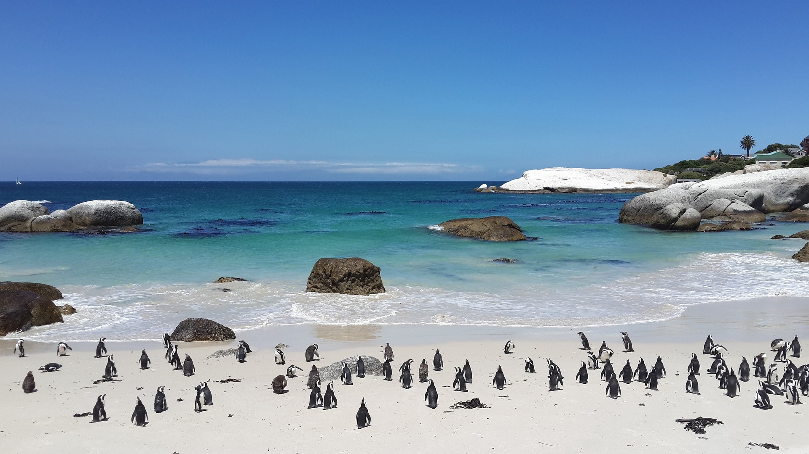

Name:Dikshita sanjay balvir
College name: Rajiv gandhi college of Engineering and Research wanadongari Nagpur
DOB: 8th sep 2000
Email:dikshita51346@gmail.com
Mother name: Mnajusha sanjay balvir
Phone no: 12345678
cape (town)

Cape Town, city and seaport, legislative capital of South Africa and capital of Western Cape province. The city lies at the northern end of the Cape Peninsula some 30 miles (50 kilometres), at its southernmost boundary, north of the Cape of Good Hope. Because it was the site of the first European settlement in South Africa, Cape Town is known as the country’s “mother city.”
Table Mountain
Table Mountain
Cape Town has a beautiful setting: parts of the city and its suburbs wind about the steep slopes of Table Mountain (3,563 feet [1,086 metres] high) and neighbouring peaks and rim the shores of Table Bay; other parts lie on the flats below the slopes or stretch southward across the flats to False Bay. The city covers an area of 116 square miles (300 square kilometres). Pop. (2005 est.) urban agglom., 3,103,000.
Physical and human geography
The character of the city
The city of Cape Town had its origin in 1652, when the Dutch East India Company established a refreshment station for its ships on the shores of Table Bay. The location was magnificent, on well-watered, fertile soil, beneath the precipitous walls of Table Mountain. The indigenous inhabitants provided cattle but not labour, and the company imported slaves, mainly from East Africa, Madagascar, and the Bay of Bengal area. The slaves brought with them something of their culture and—especially in the case of the Muslims from the East Indies—their religion. Mixed-race unions took place, but strong racial and ethnic characteristics remained. In 1781 the French established a garrison to help the Dutch defend the city against British attack, and the French presence influenced local architecture and culture. British occupation in the 19th century brought new parliamentary and judicial concepts and freedom for the slaves. Cape Town was the gateway to Europe’s penetration of the South African interior, and close ties with continental Europe were maintained.
Today Cape Town is a modern city with high-rise office buildings and pedestrian malls. Although it is a major political and economic centre, its reputation still rests on its beautiful situation between mountain and sea, its cosmopolitan population, and the liberal outlook of many of its citizens.
Pakistan Monument is a landmark in Islamabad which represents the four provinces of Pakistan.
BRITANNICA QUIZ
Countries and Capitals Quiz
How well do you know the world’s capital cities? In this quiz you’ll be presented with the names of 195 capital cities. You’ll need to match them to their countries.
The landscape
The city site
The first settlement of Cape Town was situated between Table Mountain and Table Bay. It was bounded on the northwest by the ridges known as Lion’s Head and Lion’s Rump (later called Signal Hill), on the north by Table Bay, on the south by Devil’s Peak, and on the east by marshlands and the sandy Cape Flats beyond. The nearest tillable land was on the lower eastern slopes of Devil’s Peak and Table Mountain and, farther to the southeast, at Rondebosch, Newlands, and Wynberg. From the fortress that protected the settlement, a track led south past these lands to False Bay on the eastern side of the Cape Peninsula and on beyond Muizenberg and Kalk Bay to Simon’s Bay, where the East Indiaman trade ships could find shelter from northwesterly winter gales. The constraints of mountain, sea, and sand shaped the direction of Cape Town’s growth, and the pattern was followed in subsequent road and rail construction. A railway line reached Wynberg in 1864 and Muizenberg in 1883, and another line ran eastward from Cape Town across the Flats to the interior